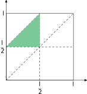
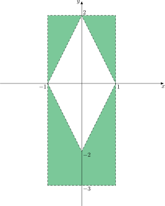

Отношения площадей.
Задача: Стержень длиной \(l\) разламывают в двух наугад выбранных точках. С какой вероятностью из получившихся кусков можно собрать треугольник?
Решение:
Пусть расстояние от первой точки до начала стержня \(x\), а от второй – \(y\). Тогда стороны треугольника \(x, \,\,\,\, y - x, \,\,\,\, l - y\), то есть из неравенства треугольника имеем:
\(x + y - x > l - y \implies y > \frac{l}2\)
\(x + l - y > y - x \implies y < x + \frac{l}2\)
\(l - y + y - x > x \implies x < \frac{l}2\)
Также \(0 \leqslant x < y \leqslant l\).
Построим картинку:

Вероятность \(\frac14\)
Задача: Плоскость разграфлена параллельными прямыми, находящимися на расстоянии \(2a\). На плоскость бросают иглу длиной \(2l, \,\,\,\, l < a\). С какой вероятностью игла пересечет прямую?
Доказательство:
Пусть \(d\) – расстояние от центра иглы до ближайшей прямой. \(\alpha\) – минимальный угол между иглой и горизонталью. Чтобы игла пересекла прямую нужно: \(l > \frac{d}{\cos{\alpha}}\). Имеем \(0 \leqslant \alpha \leqslant \frac{\pi}{2}\) и \(0 \leqslant d \leqslant a\).
Вероятность \(\frac{\displaystyle\int\limits_0^l \operatorname{acos}{\frac{x}{l}}dx}{\frac{\pi}2\cdot a} = \frac{2}{\pi}\cdot \frac{l}{a}\).
Задача: В прямоугольник \([-1, 1]\times [-3, 2]\) бросают точку. Пусть \((x, y)\) ее координаты. Найти вероятность того, что у уравнения
\[12t^2 - (2|x| + |y| - 2)t + (\sqrt{x^2 + y^2} - 4) = 0\]
относительно неизвестной \(t\) отрицательный корень по модулю меньше положительного.
Доказательство:
Дискриминант уравнения в прямоугольнике всегда положительный, поэтому у уравнения два корня.
Дискриминант \(D(x, y) = (2|x|+|y| - 2)^2 - 48(\sqrt{x^2 + y^2} - 4)\)
Корни уравнения \(t_{1, 2} = \frac1{24}\left(2|x|+|y| - 2 \pm \sqrt{D(x, y)}\right)\).
\(t_1 > |t_2| \implies 2|x| + |y| > 2\).

Найдем искомое отношение: \(\frac{5\cdot 2 - \frac12\cdot(4 \cdot 2)}{5\cdot 2} = 0.6\)
Определение: События несовместны, если они попарно не пересекаются.
Задача: Пусть \(P(A) > 0\) и \(P(B) > 0\).
Доказательство:
\(A\) и \(B\) независимы \(\implies P(AB) = P(A)\cdot P(B)\)
\(A\) и \(B\) несовместны \(AB = \varnothing \implies P(AB) = 0 \ne P(A)\cdot P(B)\), так как \(P(A) > 0\) и \(P(B) > 0\)
Значит при условии \(P(A) > 0\) и \(P(B) > 0\) оба утверждения ложны \(\,\,\,\,\blacksquare\)
Задача: Доказать, что \(P(A_1\ldots A_n) = P(A_n|A_{n - 1}\ldots A_1)\cdot P(A_{n - 1}|A_{n - 2}\ldots A_1)\cdot \ldots \cdot P(A_2|A_1)\cdot P(A_1)\).
Доказательство: \(P(A_1\ldots A_n) = P(A_n|A_{n - 1}\ldots A_1)\cdot P(A_{n - 1}|A_{n - 2}\ldots A_1)\cdot \ldots \cdot P(A_2|A_1)\cdot P(A_1)\)
\(P(A_2|A_1)\cdot P(A_1) = \frac{P(A_2 A_1)}{P(A_1)}\cdot p(A_1) = P(A_2 A_1)\). Продолжая также далее получим утверждение \(\,\,\,\,\blacksquare\)
Задача: В урне \(6\) черных, \(5\) красных и \(4\) белых шара. Последовательно извлекают три шара.
Доказательство:
\(P(\{\operatorname{white}\}|\frac{6}{15}\cdot \frac{5}{14}) = \frac{\frac{4}{13}\frac{6}{15}\cdot \frac{5}{14}}{\frac{6}{15}\cdot \frac{5}{14}} = \frac{4}{13}\)
\(\frac{6}{15}\frac{5}{14}\cdot \frac{4}{13} = \frac{4}{91}\)
Задача: Ключ в столе с вероятностью \(p\). При этом в любом из \(8\) ящиков он с одинаковой вероятностью. С какой вероятностью он в столе, если его нет в \(7\) уже проверенных ящиках?
Доказательство:
\(\frac{p}{8 - 7p}\)